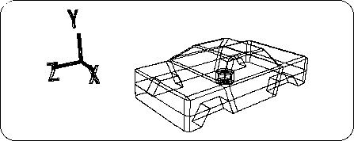

Return to previous page | Return to menu ｜ Go to next page
Here we call a new object “Cylinder” for the tire.
[Get] → [Primitive] → [Cylinder]
When the numeric input window opens, press
Radius: 0.225, Height: 0.25,
Longitude (longitude direction) Step: 8, Latitude (latitude direction) Step: 1, Base: 2
And enter the numbers respectively. Then, the cylinder shown in the figure (slightly crushed vertically) appears at the origin (Figure 3-28).

And the car model you have been working on turns into a black wireframe, and the cylinder turns into a white wireframe (selected).